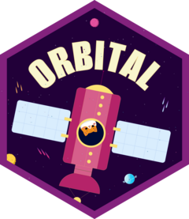

Estimate orbital expression character count
Source:R/estimate-size.R
estimate_orbital_size.RdEstimates the character count of the orbital expression that would be generated for a model, without actually generating it. This is useful during hyperparameter tuning when you want to track SQL size as a metric but don't want to pay the cost of generating the full orbital object for every candidate model.
Usage
estimate_orbital_size(x, ...)
# S3 method for class 'xgb.Booster'
estimate_orbital_size(x, ...)
# S3 method for class 'lgb.Booster'
estimate_orbital_size(x, ...)
# S3 method for class 'ranger'
estimate_orbital_size(x, ...)
# S3 method for class 'randomForest'
estimate_orbital_size(x, ...)
# S3 method for class 'rpart'
estimate_orbital_size(x, ...)
# S3 method for class 'constparty'
estimate_orbital_size(x, ...)
# S3 method for class 'catboost.Model'
estimate_orbital_size(x, ...)
# S3 method for class 'glm'
estimate_orbital_size(x, ...)
# S3 method for class 'lm'
estimate_orbital_size(x, ...)
# S3 method for class 'glmnet'
estimate_orbital_size(x, ..., penalty = NULL)
# S3 method for class 'earth'
estimate_orbital_size(x, ...)
# S3 method for class 'recipe'
estimate_orbital_size(x, ...)
# S3 method for class 'workflow'
estimate_orbital_size(x, ...)
# S3 method for class 'tailor'
estimate_orbital_size(x, ...)Details
The estimation uses model metadata (tree structure, number of parameters, feature names) to approximate the size of the resulting orbital expression. The estimates are typically within 5-10% of the actual size.
For tree-based models, this function is much faster than generating the full orbital object because it only needs to inspect the tree structure, not convert each tree to an R expression.
This function aims to support all the same models and preprocessing
operations as orbital(). If you find a case where orbital() works but
estimate_orbital_size() does not, please
file an issue.
See also
orbital() for generating orbital objects.
Examples
library(xgboost)
# Estimate size for an xgboost model
x <- as.matrix(mtcars[, -1])
y <- mtcars[, 1]
model <- xgboost(x = x, y = y, nrounds = 50, max_depth = 4, verbosity = 0)
estimate_orbital_size(model)
#> [1] 26404
library(recipes)
library(workflows)
library(parsnip)
# Estimate size for a workflow
rec <- recipe(mpg ~ ., data = mtcars) |>
step_normalize(all_numeric_predictors())
wf <- workflow() |>
add_recipe(rec) |>
add_model(linear_reg()) |>
fit(mtcars)
estimate_orbital_size(wf)
#> [1] 872